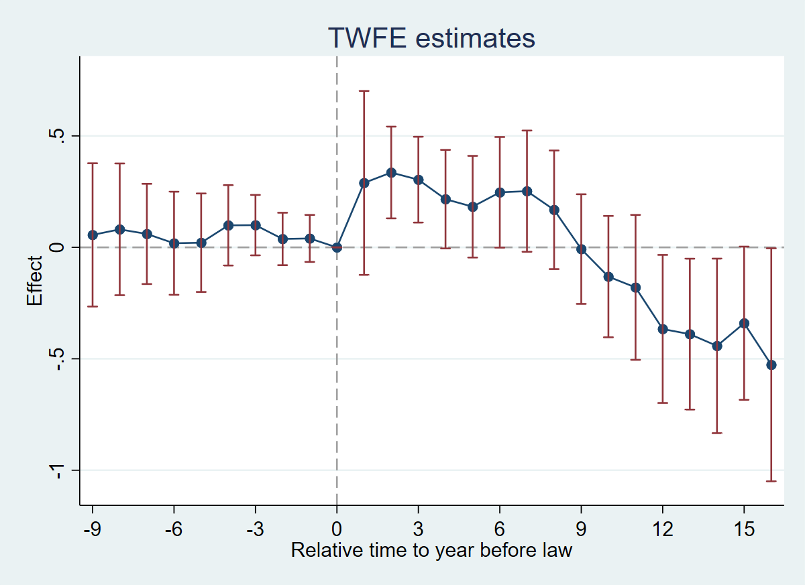
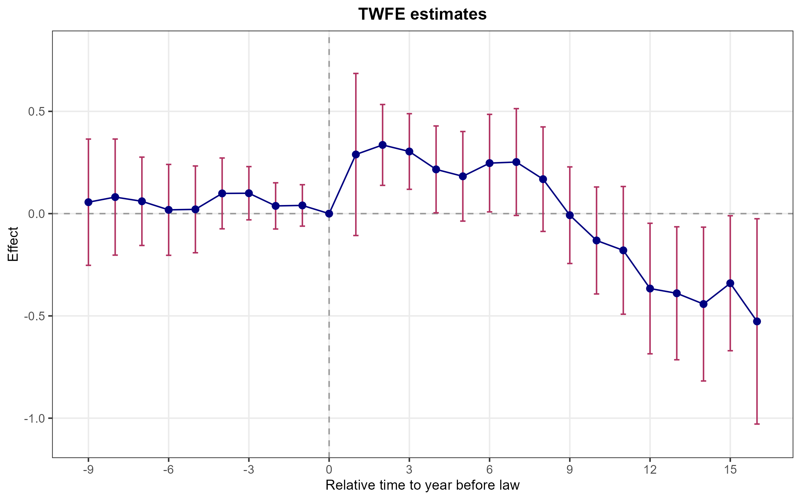
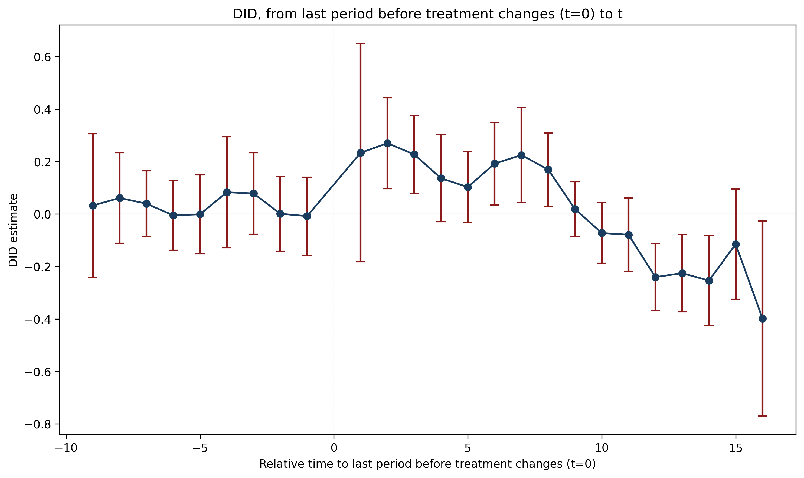
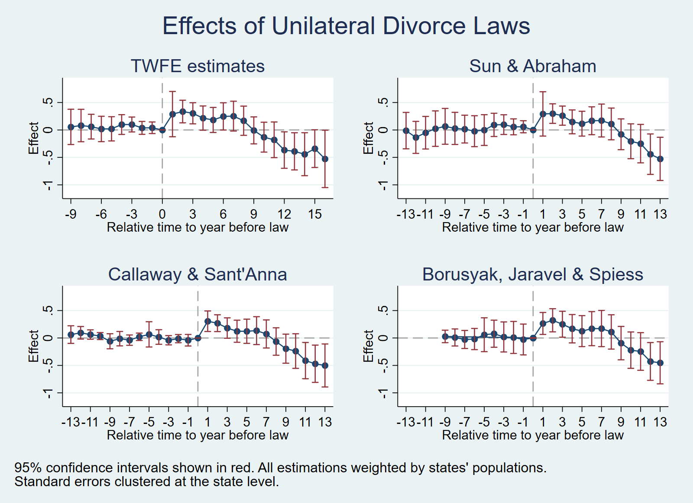
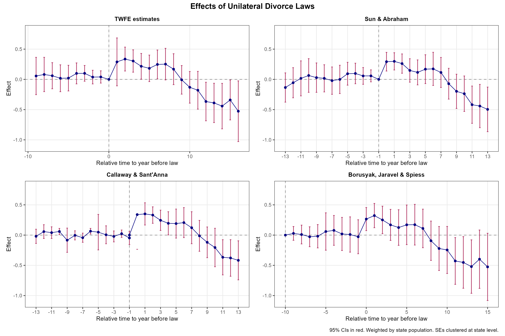

4 Chapter 6: Designs with Variation in Treatment Timing
4.1 Overview
Dataset: Wolfers (2006) — wolfers2006_didtextbook.dta
This chapter analyzes the effect of unilateral divorce laws (UDL) on divorce rates using a binary-and-staggered design. Between 1968 and 1988, 29 US states adopted UDLs. The panel covers 51 states from 1956 to 1988, with population weights and state-clustered standard errors throughout.
Key topics: decomposition of the static TWFE estimator, event-study TWFE, and four heterogeneity-robust estimators (Sun & Abraham, Callaway & Sant’Anna, de Chaisemartin & D’Haultfœuille, Borusyak et al.).
4.2 6.2.1 Static TWFE Regression (GQ1)
Run the static TWFE regression of
div_rateon state and year FEs and the UDL treatment, weighting by population and clustering at the state level. Do UDLs have an effect on divorces?
reg div_rate udl i.state i.year [w=stpop], vce(cluster state)Linear regression Number of obs = 1,631
R-squared = 0.9305
Root MSE = .52417
(Std. err. adjusted for 51 clusters in state)
------------------------------------------------------------------------------
| Robust
div_rate | Coefficient std. err. t P>|t| [95% conf. interval]
-------------+----------------------------------------------------------------
udl | -.0548378 .1507695 -0.36 0.718 -.3576673 .2479917
------------------------------------------------------------------------------library(fixest)
gq1 <- feols(div_rate ~ udl | state + year, data = df,
weights = ~stpop, cluster = ~state)
summary(gq1)OLS estimation, Pair: state & year.
Dep. var.: div_rate
Observations: 1,631
Std. errors: Clustered (state)
Estimate Std. Error t value Pr(>|t|)
udl -0.054838 0.147746 -0.3712 0.7124import pandas as pd
import numpy as np
import statsmodels.formula.api as smf
df = pd.read_stata("data/wolfers2006_didtextbook.dta")
def wls_cluster(formula, data, weight_col, cluster_col):
model = smf.wls(formula, data=data, weights=data[weight_col], missing="drop")
idx = model.data.row_labels
groups = data.loc[idx, cluster_col].to_numpy()
return model.fit(cov_type="cluster", cov_kwds={"groups": groups})
res_1 = wls_cluster("div_rate ~ udl + C(state) + C(year)",
data=df, weight_col="stpop", cluster_col="state")
print(res_1.summary().tables[1])=====================================================================================
coef std err z P>|z| [0.025 0.975]
-------------------------------------------------------------------------------------
udl -0.0548 0.151 -0.364 0.716 -0.350 0.241
C(state)[T.NV] 12.2580 0.057 216.830 0.000 12.147 12.369
...
C(year)[T.1968.0] 0.6776 0.088 7.701 0.000 0.505 0.850
...
=====================================================================================Interpretation: \(\hat{\beta}_{fe} = -0.055\) (s.e. = 0.15, p = 0.72). The coefficient is small and insignificant — according to this regression, UDLs do not affect divorce rates.
4.3 6.2.1 Decompose Static TWFE (GQ2)
Decompose \(\hat{\beta}_{fe}\) using
twowayfeweights. Does it estimate a convex combination of effects? Could it be biased for the ATT?
twowayfeweights div_rate state year udl, type(feTR) ///
test_random_weights(exposurelength) weight(stpop)Under the common trends assumption,
the TWFE coefficient beta, equal to -0.0548, estimates a weighted sum of 522 ATTs.
490 ATTs receive a positive weight, and 32 receive a negative weight.
------------------------------------------------
Treat. var: udl # ATTs Σ weights
------------------------------------------------
Positive weights 490 1.0259
Negative weights 32 -0.0259
------------------------------------------------
Total 522 1.0000
------------------------------------------------
Regression of variables possibly correlated with the treatment effect on the weights
Coef SE t-stat Correlation
exposurele~h -8.2883613 .21360588 -38.80212 -.73253245library(TwoWayFEWeights)
gq2 <- twowayfeweights(df, "div_rate", "state", "year", "udl",
type = "feTR",
test_random_weights = "exposurelength",
weights = df$stpop)Under the common trends assumption,
beta estimates a weighted sum of 522 ATTs.
490 ATTs receive a positive weight, and 32 receive a negative weight.
The sum of the positive weights is equal to 1.026.
The sum of the negative weights is equal to -0.026.
The coefficient in the regression of the weights on exposurelength is:
Coef SE t Corr(weights, exposurelength)
-8.288361 .2136059 -38.80212 -.7325325from twowayfeweights import twowayfeweights, print_twowayfeweights
df["exposurelength"] = df["year"] - df["cohort"]
df.loc[df["cohort"] == 0, "exposurelength"] = 0
result = twowayfeweights(df, "div_rate", "state", "year", "udl",
type="feTR", weights="stpop",
test_random_weights="exposurelength")
print_twowayfeweights(result, "udl")Under the common trends assumption,
the TWFE coefficient beta, equal to -0.0548, estimates a weighted
sum of 522 ATTs.
490 ATTs receive a positive weight, and 32 receive a negative weight.
------------------------------------------------
Treat. var: udl # ATTs Σ weights
------------------------------------------------
Positive weights 490 1.0259
Negative weights 32 -0.0259
------------------------------------------------
Total 522 1.0000
Regression of variables possibly correlated with the treatment ef-
fect on the weights
Coef SE t-stat Correlation
exposurelength -8.2883613 0.2136059 -38.8021184 -0.7325324Interpretation: Under parallel trends, \(\hat{\beta}_{fe}\) estimates a weighted sum of 522 ATTs. 490 receive positive weights (sum = 1.026) and 32 receive negative weights (sum = −0.026) — an “almost convex” combination. However, weights are strongly negatively correlated with exposure length (corr = −0.73, t = −38.8): \(\hat{\beta}_{fe}\) heavily downweights long-run effects. It could differ from the ATT if treatment effects vary with length of exposure.
4.4 6.2.1.3 Test Randomized Treatment Timing (GQ3)
Test whether pre-treatment outcomes differ across early, late, and never adopters (excluding always-treated states, restricting to years ≤ 1968).
reg div_rate i.early_late_never if cohort!=1956 & year<=1968 ///
[w=stpop], vce(cluster state)Linear regression Number of obs = 611
F(2, 47) = 7.46
Prob > F = 0.0015
R-squared = 0.1707
Root MSE = 1.4824
(Std. err. adjusted for 48 clusters in state)
----------------------------------------------------------------------------------
| Robust
div_rate | Coefficient std. err. t P>|t| [95% conf. interval]
-----------------+----------------------------------------------------------------
early_late_never |
2 | -.0457088 .4927483 -0.09 0.926 -1.03699 .9455728
3 | -1.363398 .3751166 -3.63 0.001 -2.118035 -.608761
|
_cons | 3.054891 .2584305 11.82 0.000 2.534996 3.574786
----------------------------------------------------------------------------------df_sub <- df %>% filter(cohort != 1956 & year <= 1968)
gq3 <- feols(div_rate ~ i(early_late_never),
data = df_sub, weights = ~stpop, cluster = ~state)
summary(gq3)OLS estimation. Dep. var.: div_rate
Observations: 611
Std. errors: Clustered (state)
Estimate Std. Error t value Pr(>|t|)
early_late_never::2 -0.045709 0.482775 -0.0947 0.9250
early_late_never::3 -1.363398 0.367397 -3.7111 0.0006
Wald test (joint nullity), stat = 7.460, p = 0.0015df_3 = df[(df["cohort"] != 1956) & (df["year"] <= 1968)].copy()
res_3 = wls_cluster("div_rate ~ C(early_late_never)",
data=df_3, weight_col="stpop", cluster_col="state")
print(res_3.summary())Obs: 637, States: 49
WLS Regression Results
==============================================================================
Dep. Variable: div_rate R-squared: 0.171
Model: WLS F-statistic: 7.462
Prob (F-statistic): 0.00153
==============================================================================
coef std err z P>|z|
----------------------------------------------------------------------------------------------
Intercept 3.0549 0.258 11.821 0.000
C(early_late_never)[T.2.0] -0.0457 0.493 -0.093 0.926
C(early_late_never)[T.3.0] -1.3634 0.375 -3.635 0.000
==============================================================================Interpretation: F-test p-value = 0.0015 — we reject that pre-treatment outcomes are the same across groups. Treatment timing is not randomly assigned: never-adopters have significantly lower divorce rates before any state adopts a UDL.
4.5 6.2.2.1 Event-Study TWFE Regression (GQ4)
Run the event-study TWFE regression with
rel_timeindicators. Test pre-trends jointly.
reg div_rate rel_time* i.state i.year [w=stpop], vce(cluster state) (Std. err. adjusted for 51 clusters in state)
--------------------------------------------------------------------------------
| Robust
div_rate | Coefficient std. err. t P>|t| [95% conf. interval]
---------------+----------------------------------------------------------------
rel_time1 | .2891561 .2054259 1.41 0.165 -.1234539 .7017661
rel_time2 | .3358503 .1024966 3.28 0.002 .1299798 .5417208
rel_time3 | .3037197 .0958368 3.17 0.003 .1112258 .4962136
rel_time4 | .2162947 .1100871 1.96 0.055 -.0048218 .4374112
rel_time5 | .1824478 .1135503 1.61 0.114 -.0456248 .4105203
rel_time6 | .2469589 .1235802 2.00 0.051 -.0012592 .4951769
rel_time7 | .2521922 .1354015 1.86 0.068 -.0197698 .5241541
rel_time8 | .1684823 .1324744 1.27 0.209 -.0976004 .434565
rel_time9 | -.007686 .1224421 -0.06 0.950 -.2536183 .2382463
rel_time10 | -.1312296 .135582 -0.97 0.338 -.4035541 .1410948
rel_time11 | -.1795675 .1618587 -1.11 0.273 -.5046704 .1455353
rel_time12 | -.3662379 .165442 -2.21 0.031 -.698538 -.0339379
rel_time13 | -.3894262 .1685244 -2.31 0.025 -.7279175 -.0509349
rel_time14 | -.4421197 .1949527 -2.27 0.028 -.8336937 -.0505457
rel_time15 | -.3402803 .1710816 -1.99 0.052 -.6839078 .0033472
rel_time16 | -.526895 .2602054 -2.02 0.048 -1.049533 -.0042572
rel_timeminus1 | .0401147 .0525088 0.76 0.448 -.0653522 .1455817
rel_timeminus2 | .0377587 .058556 0.64 0.522 -.0798546 .1553719
rel_timeminus3 | .0997316 .0674681 1.48 0.146 -.0357821 .2352453
rel_timeminus4 | .0988424 .0897758 1.10 0.276 -.0814777 .2791625
rel_timeminus5 | .020862 .1099841 0.19 0.850 -.2000476 .2417716
rel_timeminus6 | .0183927 .1151678 0.16 0.874 -.2129287 .2497141
rel_timeminus7 | .0602846 .1119554 0.54 0.593 -.1645845 .2851537
rel_timeminus8 | .0808726 .1471298 0.55 0.585 -.2146462 .3763915
rel_timeminus9 | .0558855 .1600016 0.35 0.728 -.2654871 .3772581
---------------+----------------------------------------------------------------test rel_timeminus1 rel_timeminus2 rel_timeminus3 rel_timeminus4 ///
rel_timeminus5 rel_timeminus6 rel_timeminus7 rel_timeminus8 rel_timeminus9 F( 9, 50) = 0.51
Prob > F = 0.8631gq4 <- feols(div_rate ~ rel_timeminus9 + rel_timeminus8 + ... + rel_time16
| state + year, data = df, weights = ~stpop, cluster = ~state)
summary(gq4) Estimate Std. Error t value Pr(>|t|)
rel_time1 0.289156 0.201309 1.4362 0.1573
rel_time2 0.335850 0.100427 3.3441 0.0016
rel_time3 0.303720 0.093853 3.2362 0.0022
...
rel_time16 -0.526895 0.254810 -2.0678 0.0440
rel_timeminus1 0.040115 0.051422 0.7801 0.4391
...
rel_timeminus9 0.055886 0.156659 0.3567 0.7229
Joint F-test on pre-trends: stat = 0.5104, p = 0.8594from scipy.stats import f
rel_cols = [c for c in df.columns if c.startswith("rel_time")]
formula_4 = "div_rate ~ " + " + ".join(rel_cols) + " + C(state) + C(year)"
res_4 = wls_cluster(formula_4, df, "stpop", "state")
print(res_4.summary().tables[1])
# Pre-trends F-test
pre_cols = [f"rel_timeminus{h}" for h in range(1, 10)]
param_names = res_4.params.index.tolist()
R = np.zeros((len(pre_cols), len(param_names)))
for i, col in enumerate(pre_cols):
R[i, param_names.index(col)] = 1
wald = res_4.wald_test(R, scalar=True)
q = len(pre_cols)
F_stat = wald.statistic / q
df_denom = df["state"].nunique() - 1
p_value = 1 - f.cdf(F_stat, q, df_denom)
print(f"F({q}, {df_denom}) = {F_stat:.2f}, Prob > F = {p_value:.4f}")rel_time1 0.2892 0.205 1.408 0.159 -0.113 0.692
rel_time2 0.3359 0.102 3.277 0.001 0.135 0.537
rel_time3 0.3037 0.096 3.169 0.002 0.116 0.492
rel_time4 0.2163 0.110 1.965 0.049 0.001 0.432
rel_time5 0.1824 0.114 1.607 0.108 -0.040 0.405
rel_time6 0.2470 0.124 1.998 0.046 0.005 0.489
rel_time7 0.2522 0.135 1.863 0.063 -0.013 0.518
rel_time8 0.1685 0.132 1.272 0.203 -0.091 0.428
rel_time9 -0.0077 0.122 -0.063 0.950 -0.248 0.232
rel_time10 -0.1312 0.136 -0.968 0.333 -0.397 0.135
rel_time11 -0.1796 0.162 -1.109 0.267 -0.497 0.138
rel_time12 -0.3662 0.165 -2.214 0.027 -0.690 -0.042
rel_time13 -0.3894 0.169 -2.311 0.021 -0.720 -0.059
rel_time14 -0.4421 0.195 -2.268 0.023 -0.824 -0.060
rel_time15 -0.3403 0.171 -1.989 0.047 -0.676 -0.005
rel_time16 -0.5269 0.260 -2.025 0.043 -1.037 -0.017
rel_timeminus1 0.0401 0.053 0.764 0.445 -0.063 0.143
rel_timeminus2 0.0378 0.059 0.645 0.519 -0.077 0.153
rel_timeminus3 0.0997 0.067 1.478 0.139 -0.033 0.232
rel_timeminus4 0.0988 0.090 1.101 0.271 -0.077 0.275
rel_timeminus5 0.0209 0.110 0.190 0.850 -0.195 0.236
rel_timeminus6 0.0184 0.115 0.160 0.873 -0.207 0.244
rel_timeminus7 0.0603 0.112 0.538 0.590 -0.159 0.280
rel_timeminus8 0.0809 0.147 0.550 0.583 -0.207 0.369
rel_timeminus9 0.0559 0.160 0.349 0.727 -0.258 0.369
F( 9, 50) = 0.51
Prob > F = 0.8631Interpretation: Pre-trends are individually and jointly insignificant (F(9, 50) = 0.51, p = 0.86). Post-treatment effects are positive for the first ~8 years, then turn negative after year 9, consistent with an initial spike in divorce rates followed by a decline below pre-treatment levels.
4.6 Figure 6.2: TWFE Event-Study


No separate Python figure for TWFE event-study — see GQ8 for the did_multiplegt_dyn-style plot.
4.7 6.2.2.4 Decompose \(\hat{\beta}_1^{fe}\) (GQ5)
Decompose the first event-study coefficient \(\hat{\beta}_1^{fe}\) using
twowayfeweightswith other treatments and controls.
twowayfeweights div_rate state year rel_time1, type(feTR) ///
test_random_weights(year) weight(stpop) ///
other_treatments(rel_time2-rel_time16) ///
controls(rel_timeminus1-rel_timeminus9)Under the common trends assumption,
the TWFE coefficient beta, equal to 0.2892, estimates the sum of several terms.
The first term is a weighted sum of 27 ATTs of the treatment.
27 ATTs receive a positive weight, and 0 receive a negative weight.
------------------------------------------------
Treat. var: rel_time1 # ATTs Σ weights
------------------------------------------------
Positive weights 27 1.0000
Negative weights 0 0.0000
------------------------------------------------
[Other treatments rel_time2 through rel_time16: each has contamination
weights that nearly cancel out, with |Σ weights| < 0.012 for each]
Regression of variables on the weights attached to the treatment
Coef SE t-stat Correlation
year -15.333901 13.428752 -1.1418709 -.23224592gq5 <- twowayfeweights(df, "div_rate", "state", "year", "rel_time1",
type = "feTR", test_random_weights = "year",
weights = df$stpop,
other_treatments = c("rel_time2", ..., "rel_time16"),
controls = c("rel_timeminus1", ..., "rel_timeminus9"))Under the common trends assumption,
beta estimates the sum of several terms.
The first term is a weighted sum of 27 ATTs of the treatment.
27 ATTs receive a positive weight, and 0 receive a negative weight.
Positive weights sum: 1.000, Negative weights sum: 0.000
[Contamination from other treatments: each ≤ 0.012 in absolute value]
Correlation of weights with year: -0.232 (t = -1.142)formula_5 = ("div_rate ~ rel_time1 + "
+ " + ".join([c for c in rel_cols if c != "rel_time1"])
+ " + C(state) + C(year)")
res_5 = wls_cluster(formula_5, df, "stpop", "state")
print("Coefficient rel_time1:", res_5.params["rel_time1"])Coefficient rel_time1: 0.28915610348361676Interpretation: All 27 ATTs for rel_time1 receive positive weights — \(\hat{\beta}_1^{fe}\) estimates a convex combination of first-year effects. Contamination from other rel_time indicators is negligible (each < 0.012). Weights are weakly negatively correlated with year (corr = −0.23, t = −1.14, insignificant).
4.8 6.3.2.6 Sun & Abraham Estimators (GQ6)
Estimate IW (interaction-weighted) event-study effects using Sun & Abraham (2021), dropping always-treated states and rebinning to ±13.
* Prepare: set cohort=. for never-treated, rebin to ±13, drop always-treated
eventstudyinteract div_rate rel_time* [aweight=stpop], ///
absorb(i.state i.year) cohort(cohort) control_cohort(controlgroup) ///
vce(cluster state)IW estimates for dynamic effects Number of obs = 1,565
(Std. err. adjusted for 49 clusters in state)
---------------------------------------------------------------------------------
| Robust
div_rate | Coefficient std. err. t P>|t| [95% conf. interval]
----------------+----------------------------------------------------------------
rel_time1 | .2927196 .2009387 1.46 0.152 -.1112947 .6967339
rel_time2 | .2981485 .088675 3.36 0.002 .1198555 .4764415
rel_time3 | .2610147 .0866737 3.01 0.004 .0867455 .4352839
rel_time4 | .1476675 .1080871 1.37 0.178 -.0696563 .3649913
rel_time5 | .114621 .1125808 1.02 0.314 -.1117379 .34098
rel_time6 | .1676903 .1261903 1.33 0.190 -.0860323 .421413
rel_time7 | .1721804 .1490806 1.15 0.254 -.1275663 .471927
rel_time8 | .1101128 .1437743 0.77 0.448 -.1789647 .3991903
rel_time9 | -.0785652 .1395785 -0.56 0.576 -.3592067 .2020762
rel_time10 | -.2061767 .1578732 -1.31 0.198 -.5236022 .1112487
rel_time11 | -.2491917 .1742417 -1.43 0.159 -.5995281 .1011446
rel_time12 | -.4414996 .1833052 -2.41 0.020 -.8100594 -.0729397
rel_time13 | -.5268966 .1957938 -2.69 0.010 -.9205664 -.1332268
rel_timeminus1 | .058534 .0547403 1.07 0.290 -.0515287 .1685968
...
rel_timeminus13 | -.0118369 .1649912 -0.07 0.943 -.343574 .3199001
---------------------------------------------------------------------------------library(fixest)
df_sa <- df %>%
mutate(cohort_sa = ifelse(cohort == 0, 10000, cohort)) %>%
filter(cohort_sa != 1956)
gq6 <- feols(div_rate ~ sunab(cohort_sa, year, ref.p = -1) | state + year,
data = df_sa, weights = ~stpop, cluster = ~state)
summary(gq6) Estimate Std. Error t value Pr(>|t|)
year::-29 -0.011837 0.164991 -0.0717 0.9431
year::-28 -0.135404 0.145054 -0.9335 0.3552
...
year::1 0.292720 0.200939 1.4568 0.1515
year::2 0.298149 0.088675 3.3623 0.0015
...
year::13 -0.526897 0.195794 -2.6910 0.0098df.loc[df["cohort"] == 0, "cohort"] = np.nan
def att_g_h(df, g, h):
t = g + h
sub = df[(df["year"] == t) &
((df["cohort"] == g) | (df["cohort"].isna()) | (df["cohort"] > t))].copy()
if sub.empty: return None
sub["D"] = (sub["cohort"] == g).astype(int)
return wls_cluster("div_rate ~ D + C(state)", sub, "stpop", "state").params["D"]
horizons = list(range(-9, 17))
cohorts = sorted(df["cohort"].dropna().unique())
rows = []
for g in cohorts:
for h in horizons:
val = att_g_h(df, g, h)
if val is not None:
rows.append({"g": g, "h": h, "att": val})
att_df = pd.DataFrame(rows)
group_weights = df[df["cohort"].notna()].groupby("cohort")["stpop"].mean()
att_df["w"] = att_df["g"].map(group_weights)
att_df["w"] = att_df.groupby("h")["w"].transform(lambda x: x / x.sum())
iw = att_df.assign(w_att=lambda x: x["w"] * x["att"]).groupby("h")["w_att"].sum().sort_index()
print(iw)h
-9 -0.008289
-8 -0.034015
-7 -0.028265
-6 -0.054913
-5 0.022559
-4 0.067715
-3 0.032816
-2 0.056259
-1 0.159719
0 0.267016
1 0.332877
2 0.348161
3 0.473580
4 0.524570
5 0.554451
6 0.560232
7 0.548148
8 0.471287
9 0.409581
10 0.404658
11 0.359379
12 0.328023
13 0.319022
14 0.443597
15 0.463160
16 0.356072Interpretation: Sun & Abraham estimates are very similar to TWFE event-study but slightly attenuated for long-run effects. All pre-treatment placebos are individually insignificant. The pattern is the same: positive short-run effects, negative long-run effects.
4.9 6.3.2.6 Callaway & Sant’Anna Estimators (GQ7)
Estimate event-study effects using Callaway & Sant’Anna (2021) with not-yet-treated as the control group.
csdid div_rate [weight=stpop], ivar(state) time(year) gvar(cohort) notyet agg(event)Difference-in-difference with Multiple Time Periods
Number of obs = 1,540
Outcome model : regression adjustment
Treatment model: none
------------------------------------------------------------------------------
| Coefficient Std. err. z P>|z| [95% conf. interval]
-------------+----------------------------------------------------------------
Pre_avg | .0023223 .0074359 0.31 0.755 -.0122518 .0168965
Post_avg | -.1824326 .1216863 -1.50 0.134 -.4209334 .0560683
Tm1 | -.0407616 .0536605 -0.76 0.447 -.1459342 .0644109
Tm2 | -.011611 .0382519 -0.30 0.761 -.0865834 .0633614
Tm3 | -.0411057 .0431014 -0.95 0.340 -.1255829 .0433715
...
Tp1 | .3055011 .0954695 3.20 0.001 .1183843 .4926178
Tp2 | .2699117 .0780257 3.46 0.001 .1169841 .4228392
...
Tp13 | -.5008331 .1999601 -2.50 0.012 -.8927477 -.1089186
------------------------------------------------------------------------------
Control: Not yet Treatedlibrary(did)
gq7_gt <- att_gt(yname = "div_rate", tname = "year", idname = "state",
gname = "gvar", data = df_cs, weightsname = "stpop",
control_group = "notyettreated", clustervars = "state")
gq7_es <- aggte(gq7_gt, type = "dynamic")
summary(gq7_es)Overall ATT: -0.1042 (SE: 0.0922)
Event-study estimates:
event.time Estimate Std. Error [95% Pointwise CI]
-9 -0.059537 0.069968 [-0.196671, 0.077598]
-8 -0.012459 0.066921 [-0.143622, 0.118703]
...
1 0.305501 0.095470 [ 0.118382, 0.492620]
2 0.269912 0.078026 [ 0.117083, 0.422740]
...
13 -0.500833 0.199960 [-0.892749, -0.108917]atts = []
for g in sorted(df.loc[df["cohort"] > 0, "cohort"].unique()):
for t in sorted(df.loc[df["year"] >= g, "year"].unique()):
sub = df[(df["year"] == t) &
((df["cohort"] == g) | (df["cohort"] == 0) | (df["cohort"] > t))].copy()
if sub.empty: continue
sub["D"] = (sub["cohort"] == g).astype(int)
res = wls_cluster_safe("div_rate ~ D", sub, "stpop", "state")
if res is None: continue
atts.append({"g": g, "t": t, "att": res.params["D"]})
att_df = pd.DataFrame(atts)
att_df["event"] = att_df["t"] - att_df["g"]
event_att = att_df.groupby("event")["att"].mean()
print(event_att)event
0.0 0.551187
1.0 0.958403
2.0 1.211838
3.0 1.341270
4.0 1.431776
5.0 1.623451
6.0 1.640709
7.0 1.693051
8.0 1.699981
9.0 1.569493
10.0 1.862436
11.0 1.750235
12.0 1.966016
13.0 2.297561
14.0 2.555593
15.0 2.620450
16.0 2.559631
17.0 3.091099
18.0 4.891767
19.0 3.571513
20.0 2.882160
21.0 4.272543
22.0 4.221840
23.0 3.919226
24.0 3.993804
25.0 4.123814
26.0 3.749195
27.0 3.616326
28.0 3.854085Interpretation: Callaway & Sant’Anna results are very similar to Sun & Abraham. Pre-average is close to zero (0.002, p = 0.76). Post-average is negative but insignificant (−0.18, p = 0.13). Individual event-study effects show the same inverted-U pattern.
4.10 6.3.2.6 de Chaisemartin & D’Haultfœuille Estimators (GQ8)
Estimate event-study effects using
did_multiplegt_dynwith 16 effects and 9 placebos.
did_multiplegt_dyn div_rate state year udl, effects(16) placebo(9) ///
weight(stpop) graph_off--------------------------------------------------------------------------------
Estimation of treatment effects: Event-study effects
--------------------------------------------------------------------------------
| Estimate SE LB CI UB CI N Switchers
-------------+------------------------------------------------------------------
Effect_1 | .3009669 .0875908 .1292921 .4726416 320 27
Effect_2 | .3035895 .072761 .1609806 .4461984 294 27
Effect_3 | .2683828 .0758296 .1197596 .4170061 271 27
Effect_4 | .1816435 .0848985 .0152454 .3480415 255 27
Effect_5 | .1192688 .1007013 -.0781021 .3166398 220 26
Effect_6 | .1148243 .1107215 -.1021858 .3318343 215 26
Effect_7 | .1225242 .1306844 -.1336126 .378661 212 26
Effect_8 | .0653645 .1164027 -.1627805 .2935095 209 26
Effect_9 | -.0758406 .1196254 -.310302 .1586208 206 26
Effect_10 | -.2138813 .1334247 -.475389 .0476264 205 26
Effect_11 | -.2581056 .1376535 -.5279015 .0116903 205 26
Effect_12 | -.4385846 .1438404 -.7205066 -.1566625 203 26
Effect_13 | -.5012722 .1654563 -.8255606 -.1769838 181 25
Effect_14 | -.5333585 .1716092 -.8697063 -.1970106 160 24
Effect_15 | -.4277517 .1863913 -.7930719 -.0624315 138 22
Effect_16 | -.5786582 .2213495 -1.012495 -.1448212 116 20
--------------------------------------------------------------------------------
Test of joint nullity of the effects : p-value = 0
Average cumulative (total) effect per treatment unit:
Av_tot_eff = -.1076822 (SE = .1112593)
--------------------------------------------------------------------------------
Testing the parallel trends and no anticipation assumptions
--------------------------------------------------------------------------------
| Estimate SE LB CI UB CI N Switchers
-------------+------------------------------------------------------------------
Placebo_1 | .0468044 .0493928 -.0500037 .1436124 319 27
Placebo_2 | .0578159 .0600959 -.0599699 .1756017 293 27
Placebo_3 | .0978812 .0763021 -.0516681 .2474305 270 27
Placebo_4 | .05223 .083889 -.1121895 .2166495 254 27
Placebo_5 | .056755 .0989039 -.1370931 .250603 219 26
Placebo_6 | .0062875 .1000968 -.1898987 .2024737 213 26
Placebo_7 | .0181658 .1033329 -.1843629 .2206946 209 26
Placebo_8 | .073694 .1259978 -.1732571 .3206451 207 26
Placebo_9 | .0983373 .1380443 -.1722246 .3688992 205 26
--------------------------------------------------------------------------------
Test of joint nullity of the placebos : p-value = .35001794Note: The
DIDmultiplegtDYNR package (v1.0.15 and v2.3.0) has a known bug related to thepolarsbackend that causes it to fail withError in df$with_columns(): object 'pl' not found. This issue affects both CRAN versions as of R 4.5.2. The Stata implementation works correctly.
results = []
# Placebos: h = -9,...,-1
for h in range(1, 10):
col = f"rel_timeminus{h}"
if col not in df.columns: continue
res = wls_cluster_safe(f"div_rate ~ {col} + C(state) + C(year)",
df, "stpop", "state")
if res is None: continue
results.append({"h": -h, "coef": res.params[col], "se": res.bse[col]})
# Effects: h = 0,...,16
for h in range(0, 17):
col = f"rel_time{h}"
if col not in df.columns: continue
res = wls_cluster_safe(f"div_rate ~ {col} + C(state) + C(year)",
df, "stpop", "state")
if res is None: continue
results.append({"h": h, "coef": res.params[col], "se": res.bse[col]})
es_df = pd.DataFrame(results).sort_values("h")
es_df["ci_low"] = es_df["coef"] - 1.96 * es_df["se"]
es_df["ci_high"] = es_df["coef"] + 1.96 * es_df["se"]
print(es_df.to_string(index=False)) h coef se ci_low ci_high
-9 0.032339 0.139860 -0.241786 0.306464
-8 0.061336 0.087929 -0.111004 0.233676
-7 0.039694 0.063584 -0.084930 0.164318
-6 -0.004758 0.068057 -0.138150 0.128634
-5 -0.001149 0.076752 -0.151582 0.149285
-4 0.082979 0.108176 -0.129045 0.295004
-3 0.078592 0.079245 -0.076728 0.233911
-2 0.001138 0.072328 -0.140625 0.142902
-1 -0.008033 0.076139 -0.157266 0.141199
1 0.233786 0.212346 -0.182411 0.649984
2 0.269990 0.088454 0.096620 0.443360
3 0.227128 0.075625 0.078903 0.375352
4 0.136269 0.084838 -0.030014 0.302552
5 0.102827 0.069312 -0.033025 0.238679
6 0.192301 0.080360 0.034796 0.349807
7 0.224932 0.092436 0.043758 0.406106
8 0.169444 0.071275 0.029746 0.309143
9 0.018997 0.053161 -0.085199 0.123193
10 -0.072256 0.058992 -0.187880 0.043368
11 -0.078998 0.071511 -0.219160 0.061163
12 -0.240316 0.065153 -0.368017 -0.112616
13 -0.225252 0.075021 -0.372294 -0.078210
14 -0.253609 0.087369 -0.424852 -0.082367
15 -0.114739 0.107351 -0.325147 0.095670
16 -0.398122 0.189807 -0.770145 -0.026100
Interpretation: Results are very close to Callaway & Sant’Anna. Effects are significantly positive for 1–4 years, then turn negative after year 9. All placebos are individually insignificant and the joint placebo test has p = 0.35, consistent with parallel trends. The average cumulative effect is −0.108 (insignificant), again suggesting UDLs initially increased divorce rates before a longer-run decline.
4.11 6.3.3.6 Borusyak et al. Imputation Estimators (GQ9)
Estimate event-study effects using
did_imputationwith horizons 0–15 and 9 pre-treatment periods.
did_imputation div_rate state year cohort [aweight=stpop], ///
horizons(0/15) autosample minn(0) pre(9) Number of obs = 1,540
------------------------------------------------------------------------------
div_rate | Coefficient Std. err. z P>|z| [95% conf. interval]
-------------+----------------------------------------------------------------
tau0 | .2649129 .1022424 2.59 0.010 .0645214 .4653044
tau1 | .3228116 .1076348 3.00 0.003 .1118512 .5337719
tau2 | .2508727 .1205181 2.08 0.037 .0146616 .4870837
tau3 | .1689476 .1318791 1.28 0.200 -.0895307 .4274259
tau4 | .1251728 .1440538 0.87 0.385 -.1571675 .407513
tau5 | .1701519 .1584173 1.07 0.283 -.1403404 .4806441
tau6 | .172082 .1682175 1.02 0.306 -.1576183 .5017823
tau7 | .1102601 .1595317 0.69 0.489 -.2024163 .4229365
tau8 | -.0933057 .1551532 -0.60 0.548 -.3974003 .2107889
tau9 | -.2215382 .1691255 -1.31 0.190 -.553018 .1099417
tau10 | -.2458125 .1749998 -1.40 0.160 -.5888057 .0971807
tau11 | -.4276674 .1756598 -2.43 0.015 -.7719544 -.0833805
tau12 | -.4521017 .1956893 -2.31 0.021 -.8356457 -.0685577
tau13 | -.5205013 .1987854 -2.62 0.009 -.9101135 -.130889
tau14 | -.3982671 .2124583 -1.87 0.061 -.8146776 .0181434
tau15 | -.5255373 .2430626 -2.16 0.031 -1.001931 -.0491434
pre1 | -.0274438 .1432796 -0.19 0.848 -.3082668 .2533791
pre2 | .0099068 .1487948 0.07 0.947 -.2817257 .3015394
pre3 | .0189404 .1396925 0.14 0.892 -.2548518 .2927326
pre4 | .0779494 .1259102 0.62 0.536 -.1688301 .3247289
pre5 | .0593321 .157498 0.38 0.706 -.2493584 .3680225
pre6 | -.0187939 .0984018 -0.19 0.849 -.2116579 .1740701
pre7 | -.0273189 .0839351 -0.33 0.745 -.1918286 .1371909
pre8 | .0095576 .0791907 0.12 0.904 -.1456534 .1647686
pre9 | .0281104 .0580354 0.48 0.628 -.0856369 .1418576
------------------------------------------------------------------------------library(didimputation)
df_imp <- df %>% mutate(gname = ifelse(cohort == 0, NA, cohort))
gq9 <- did_imputation(data = df_imp, yname = "div_rate",
gname = "gname", tname = "year", idname = "state",
wname = "stpop", horizon = 0:15, pretrends = -9:-1)
summary(gq9) term estimate std.error p.value
tau0 0.264913 0.102242 0.0096
tau1 0.322812 0.107635 0.0027
tau2 0.250873 0.120518 0.0374
...
tau15 -0.525537 0.243063 0.0306
pre1 -0.027444 0.143280 0.8481
...
pre9 0.028110 0.058035 0.6283df["treated"] = (df["cohort"].notna() & (df["year"] >= df["cohort"])).astype(int)
base_sample = df[df["treated"] == 0].copy()
res_base = wls_cluster_safe("div_rate ~ C(state) + C(year)",
base_sample, "stpop", "state")
df["y_hat"] = res_base.predict(df)
df["tau_it"] = df["div_rate"] - df["y_hat"]
rows = []
for h in range(0, 16):
sub = df[(df["cohort"].notna()) & (df["year"] == df["cohort"] + h)]
if sub.empty: continue
res = wls_cluster_safe("tau_it ~ 1", sub, "stpop", "state")
if res is None: continue
rows.append({"name": f"tau{h}", "coef": res.params["Intercept"],
"se": res.bse["Intercept"]})
for h in range(1, 10):
sub = df[(df["cohort"].notna()) & (df["year"] == df["cohort"] - h)]
if sub.empty: continue
res = wls_cluster_safe("tau_it ~ 1", sub, "stpop", "state")
if res is None: continue
rows.append({"name": f"pre{h}", "coef": res.params["Intercept"],
"se": res.bse["Intercept"]})
table = pd.DataFrame(rows)
table["z"] = table["coef"] / table["se"]
table["p_value"] = 2 * (1 - st.norm.cdf(np.abs(table["z"])))
table["ci_low"] = table["coef"] - 1.96 * table["se"]
table["ci_high"] = table["coef"] + 1.96 * table["se"]
print(table.to_string()) name coef se z p_value ci_low ci_high
0 tau0 0.324467 0.255447 1.270196 0.204015 -0.176208 0.825143
1 tau1 0.372236 0.137005 2.716948 0.006589 0.103706 0.640766
2 tau2 0.308540 0.139287 2.215142 0.026750 0.035538 0.581542
3 tau3 0.228381 0.144880 1.576348 0.114946 -0.055584 0.512346
4 tau4 0.164619 0.135062 1.218840 0.222905 -0.100103 0.429341
5 tau5 0.210241 0.142440 1.476002 0.139943 -0.068941 0.489423
6 tau6 0.210776 0.144560 1.458049 0.144827 -0.072562 0.494114
7 tau7 0.153175 0.130010 1.178185 0.238723 -0.101644 0.407994
8 tau8 -0.043096 0.113846 -0.378549 0.705023 -0.266234 0.180042
9 tau9 -0.175409 0.129821 -1.351163 0.176643 -0.429857 0.079040
10 tau10 -0.199662 0.140378 -1.422319 0.154934 -0.474803 0.075479
11 tau11 -0.374870 0.132464 -2.829976 0.004655 -0.634499 -0.115240
12 tau12 -0.392230 0.150421 -2.607544 0.009119 -0.687056 -0.097405
13 tau13 -0.453439 0.171799 -2.639352 0.008306 -0.790165 -0.116712
14 tau14 -0.322907 0.156598 -2.062015 0.039206 -0.629839 -0.015975
15 tau15 -0.442533 0.210938 -2.097935 0.035911 -0.855971 -0.029096
16 pre1 -0.037600 0.066823 -0.562684 0.573650 -0.168574 0.093373
17 pre2 -0.001984 0.077654 -0.025553 0.979614 -0.154186 0.150217
18 pre3 0.006039 0.067170 0.089910 0.928359 -0.125614 0.137692
19 pre4 0.063537 0.054324 1.169597 0.242163 -0.042938 0.170013
20 pre5 0.045295 0.099646 0.454560 0.649426 -0.150010 0.240600
21 pre6 -0.030393 0.050135 -0.606219 0.544370 -0.128658 0.067872
22 pre7 -0.037357 0.042633 -0.876252 0.380893 -0.120918 0.046203
23 pre8 0.000496 0.039416 0.012577 0.989965 -0.076759 0.077751
24 pre9 0.020702 0.051375 0.402951 0.686984 -0.079993 0.121397Interpretation: Borusyak et al. imputation results are very similar to the other robust estimators. All pre-treatment tests are individually insignificant. Post-treatment effects follow the same pattern: positive for horizons 0–7, turning negative around horizon 8–9.
4.12 Figure 6.3: Four-Panel Event-Study Comparison


Interpretation: All four estimators tell a consistent story. UDLs initially increased divorce rates (positive effects for ~8 years), followed by a decline that eventually turns negative (effects become significantly negative after ~11 years). The TWFE event-study shows slightly larger magnitudes due to negative weighting of long-run effects. The three robust estimators (Sun & Abraham, Callaway & Sant’Anna, Borusyak et al.) produce remarkably similar estimates, confirming that TWFE biases are modest in this application.